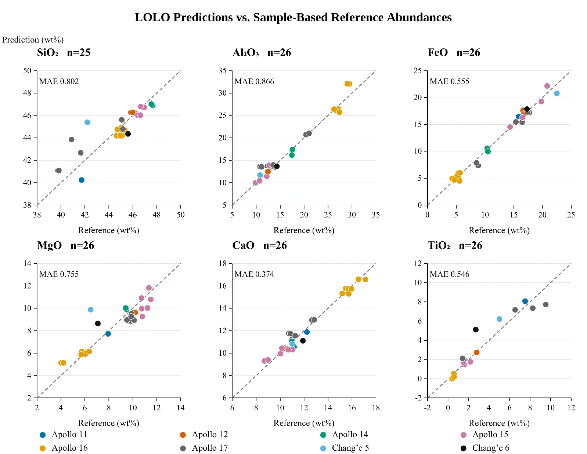
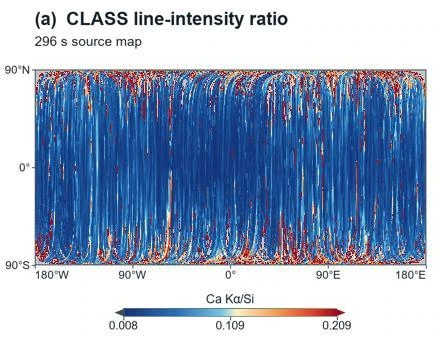
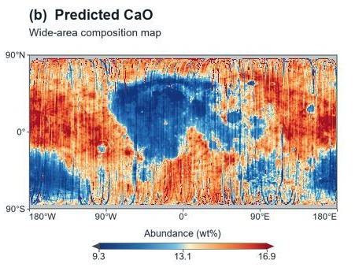
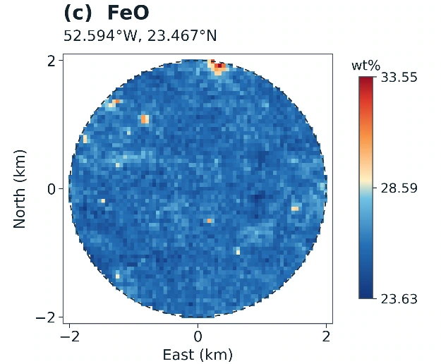

Senior thesis · Matsuura Laboratory
Automated Model Selection and Mapping of Six Major Oxide Abundances on the Lunar Surface
Manuscript status These results are from my 26 November 2026 draft. I am continuing to revise the manuscript and have not submitted it for publication.
How well can orbital spectra predict lunar soil chemistry at a landing site the model has never seen? I built Lunar AutoLab to test that question for six oxides and used the selected models to identify places for follow-up observations.
Connecting returned soil to orbital measurements
I matched 28 returned-sample records from six Apollo and two Chang’e landing sites to 26 distinct observation windows. Two pairs of Apollo samples shared a window. SiO₂ had a valid laboratory reference in 25 windows, and each other oxide had 26.
Kaguya’s Multiband Imager (MI) provided visible and near-infrared reflectance. For four mapping models, I added X-ray emission-line intensity ratios from Chandrayaan-2’s CLASS instrument. The SiO₂ and FeO mapping models used MI alone.
Lunar AutoLab compared model configurations for each oxide. I selected one model to minimize abundance error and a second to compare pairs of regions. The first set produced the CCD80 composition maps.

Testing at held-out landing sites
In leave-one-landing-site-out (LOLO) cross-validation, I trained on seven sites and predicted the eighth. I pooled errors across the held-out windows, giving each valid window equal weight. I then compared the selected mapping models with mean returned-soil compositions at Luna 16, 20, and 24. These three sites were outside model training and selection.
| Oxide | LOLO 8 sites | Luna 3 sites |
|---|---|---|
| SiO₂ | 0.802 | 2.080 |
| Al₂O₃ | 0.866 | 1.133 |
| FeO | 0.555 | 1.790 |
| MgO | 0.755 | 1.004 |
| CaO | 0.374 | 0.982 |
| TiO₂ | 0.546 | 1.677 |
Errors were higher at the Luna sites for all six oxides. At Luna 24, for example, the TiO₂ prediction was 5.430 wt% and the returned-soil mean was 1.300 wt%. Each Luna reference is a site mean, while LOLO uses sample-based references for individual windows.
View predictions for individual windows (draft Fig. 2)


Ranking two windows
The separate ranking models correctly ordered 83.69–95.08% of the evaluated pairs with different reference abundances (draft Table 6). For pairs from different sites I held out both sites, and for pairs from one site I held out that site. I used these models for supplementary comparisons between regions.
What did CLASS add?
I refitted the four mapping models that used CLASS, keeping the same MI inputs, training windows, model settings, and random seeds. Adding the X-ray line ratios reduced pooled LOLO error for each oxide. The improvement varied by landing site.
| Oxide | MI alone | MI + CLASS | Sites with lower error |
|---|---|---|---|
| Al₂O₃ | 1.901 | 0.866 | 8 / 8 |
| MgO | 1.168 | 0.755 | 4 / 8 |
| CaO | 1.085 | 0.374 | 7 / 8 |
| TiO₂ | 1.158 | 0.546 | 6 / 8 |
For CaO, the error fell from 1.085 to 0.374 wt%p. A curved band in the predicted CaO map follows a band in the CLASS Ca Kα/Si ratio map. This correspondence suggests that the input contributed a visible pattern to the output.




From wide-area screening to a 2 km neighborhood
I screened the surface at nominal 496 m spacing, refined shortlisted areas at 124 m, and made 62 m predictions within 2 km of selected centers. The global maps below average valid wide-area predictions within 0.5° × 0.5° display cells.
Gray marks cells with no valid prediction. Each oxide has its own color scale in wt%. Axes show latitude (°N) and longitude (°E).
How candidates were prioritized
I scored each region on predicted abundance (40 points), connected high-abundance area (30), valid coverage (15), and spatial stability (15). The final lists contain 20 candidates per oxide. The 120 entries occupy 112 distinct centers, with eight centers shared by Al₂O₃ and CaO.
View all candidate locations (draft Fig. 5)



Reading a high FeO prediction
The area-weighted trimmed mean was 25.974 wt% FeO within this circle. The six independently predicted abundances summed to more than 100 wt% in all 3,571 cells with complete estimates (draft Tables 7 and 7a).
Across the global map, the sum of the six oxide means exceeded 100 wt% over 12.908% of the valid display area. These checks inform how I prioritize new measurements.
A soil sample represents a small part of a 62 m × 62 m window. Verifying the mean composition across a window would require independent measurements at several locations inside it.

Reproduce the CCD80 results
- Code and data · v1.0.0Sample-to-window assignments, model settings, held-out predictions, and scripts for the maps and candidate rankings.
- Archived software release · ZenodoVersioned reproduction package. Software DOI 10.5281/zenodo.24537736.
- Supplementary File S1Luna comparisons, matched CLASS fits, and checks on the six-oxide sums.
Figure numbers on this page follow the November draft. In release v1.0.0, the global maps are Figure 2 and the LOLO plots are Figure 4.
Orbital data sources · Kaguya MI MAP V3 (JAXA/ISAS DARTS) · Chandrayaan-2 CLASS line ratios (Kumar et al.)